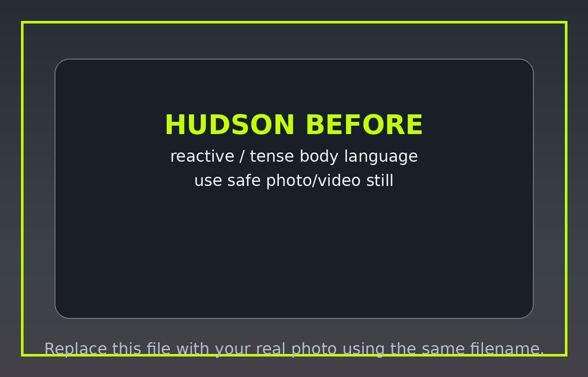
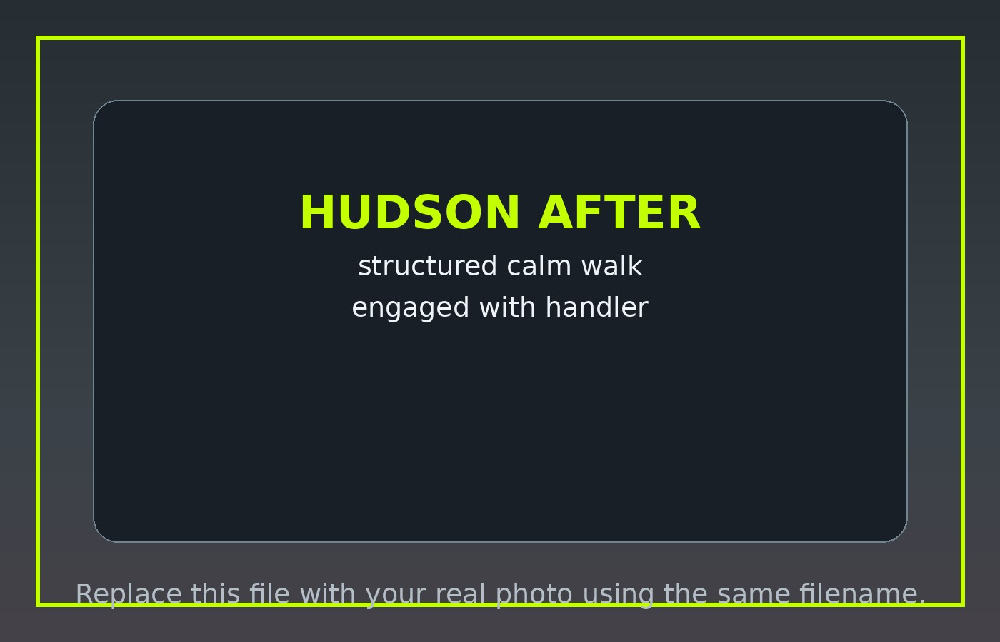
Balanced dog training for owners who want a calm, obedient, confident companion — especially large dogs that pull, ignore commands, or struggle with leash reactivity.
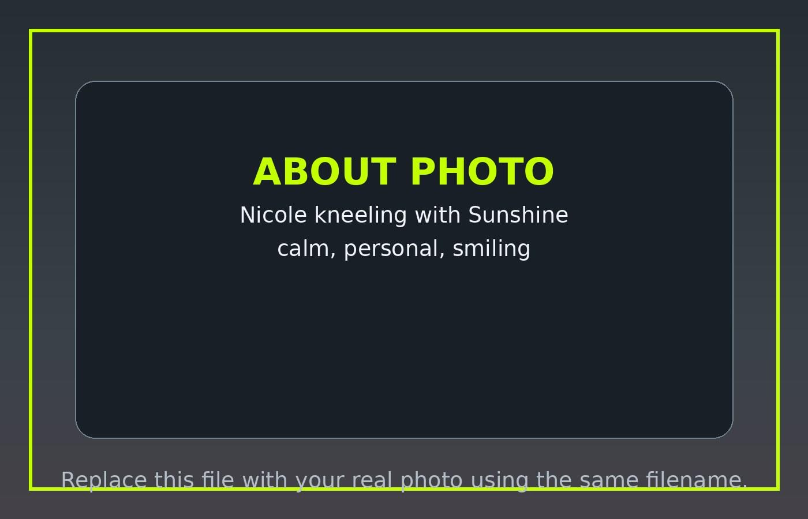
I’m Nicole Escalante, owner and trainer of Escalante Dog Training. What started with learning to train my own high-energy Weimaraner turned into a passion for helping owners build calmer, happier, more reliable dogs.
Today, I help owners of strong, energetic, and reactive dogs create structure that improves everyday life.
Read My StoryTraining services are built for owners who want better obedience, clearer communication, and skills they can keep using at home.
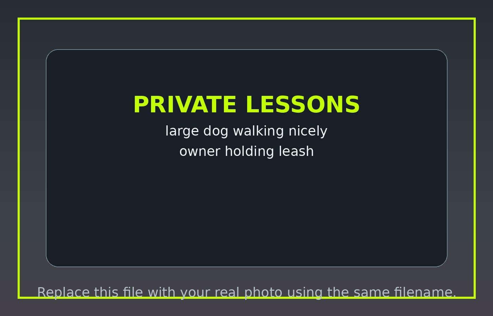
$100
One hour of focused coaching for obedience, leash manners, and owner handling skills.
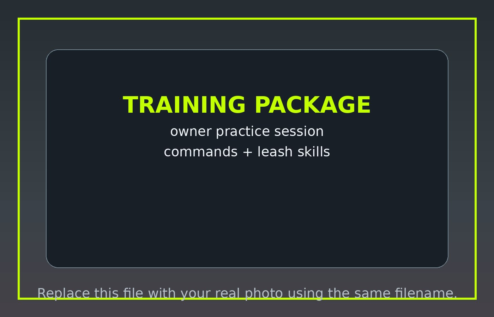
$600
10 1-hour one-on-one sessions for owners ready to build consistency and lasting results.
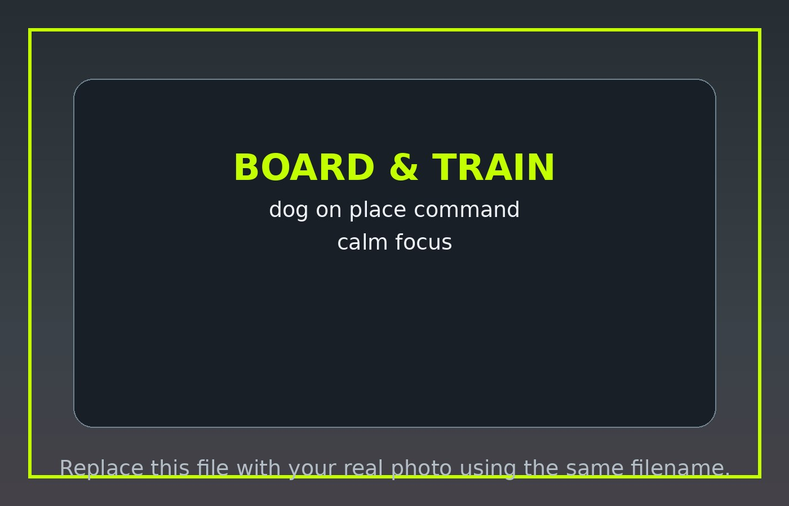
$1,000+
Structured training immersion for dogs that need a stronger reset and daily consistency.
Daycare and boarding are separate from training programs. They are available only for existing training clients who want their dog’s structure, manners, and expectations maintained while they are with me. These options do not include one-on-one training during the stay.
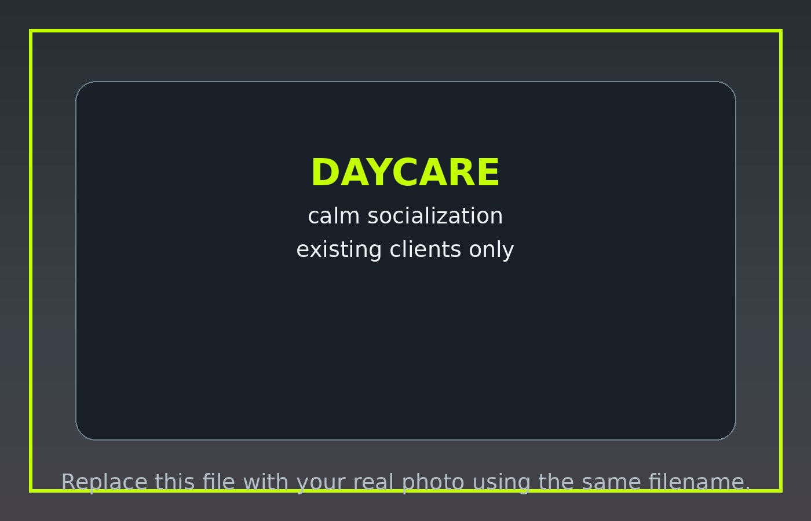
$40/day
For existing clients only. A structured day with appropriate socialization when suitable.
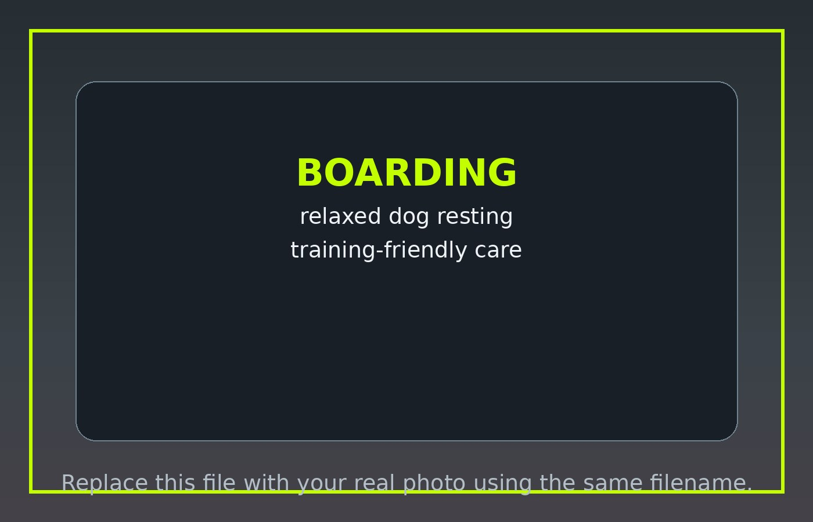
$50/night
For existing clients only. Boarding with the same structure and expectations your dog already knows.
Use this section to show transformation stories as your client list grows. Hudson and Callie are great starting stories because they speak directly to reactive-dog owners.


Young unneutered male foster dog with reactivity and dog-aggression challenges. His story can show structure, muzzle safety, engagement, and calm handling.
View Story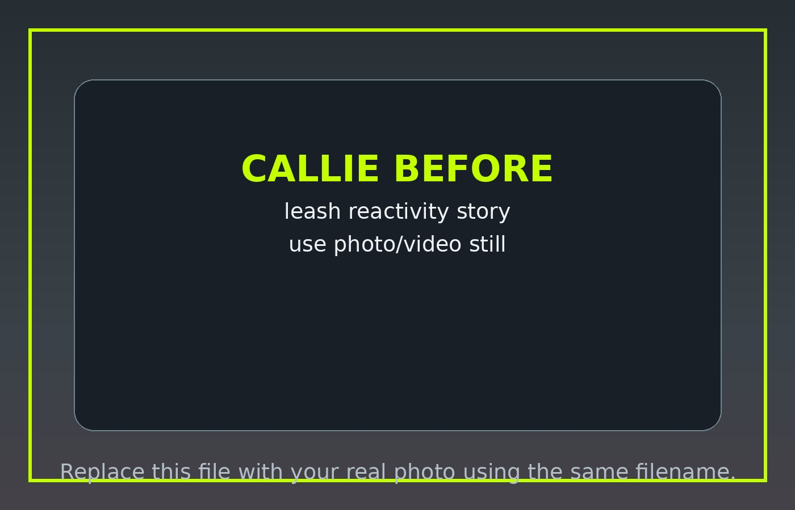
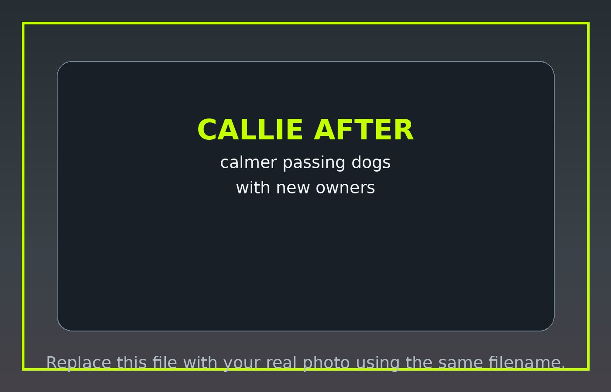
Adult spayed female with leash reactivity. Her adoption and continued work with her new owners makes a powerful training journey.
View StoryI am not a positive-only dog trainer. I use rewards to teach wanted behaviors and fair, clear consequences to interrupt unwanted behaviors. I use training tools, including prong collars, during sessions with all dogs.
The goal is not to intimidate dogs. The goal is to create clear communication, better decision-making, and calmer everyday behavior.
Is My Dog a Fit?Clients should know what they are signing up for. Prong collars are part of my training approach and will be introduced, fitted, and used with instruction during training.
All appointments are held at my home in Winchester, California, in a controlled environment that helps dogs and owners focus. I serve clients from Winchester, Temecula, Murrieta, Menifee, French Valley, Hemet, Wildomar, Lake Elsinore, and surrounding communities.
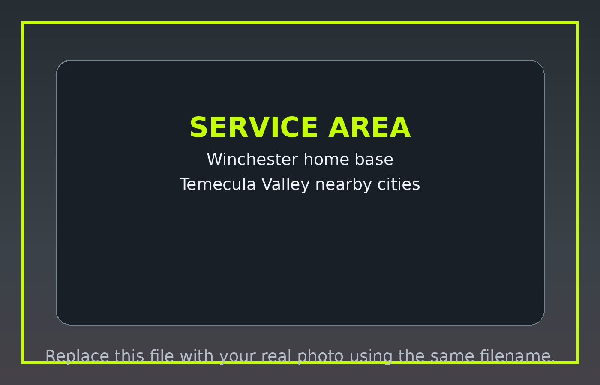